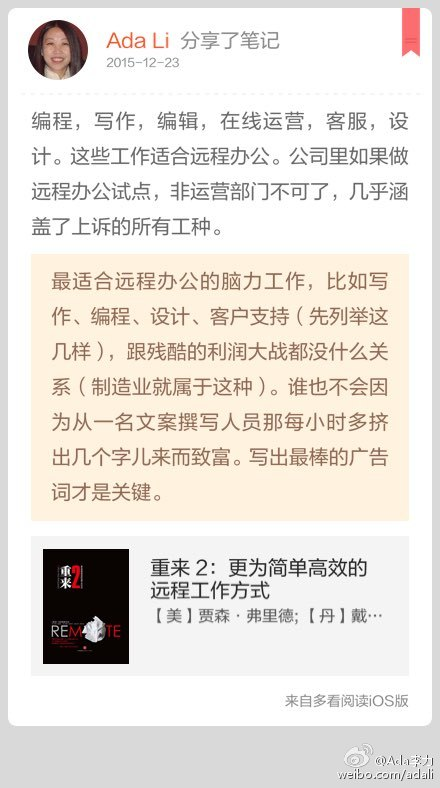

人员还没有到位，事情已经压了很多上来。有经验的运营人员市场上并不多，不过，通过项目实践，有过来人指点，同事间相互讨论学习，应该是最快的进步方式了。@Ada李力:#社群运营# 爱美医生招运营专员啦。喜欢研究护肤的可以来看看职位，有机会向国内最TOP的医美大师当面请教，可以在家办公，还有机会免费试用医学护肤品和体验医美项目。公司介绍和详细职位 -> 网页链接
目前最重要的工作就是建团队了，时间紧，所以#招聘#的面试时间有些是约在了周末。好几个候选者的第一反应是：“啊，你们周末还上班？”。-- 当工作是自己的事情时，是没有工作日和假日之分的，不过对员工不能这么期望。
不同阶段的人，需求不一样，当然谈的东西也不一样了。//@阿尔法技术: 最近看到一个说法挺有意思的，就是加强公司凝聚力，方法就是底层多给钱，中层给愿景，高层谈感情。@Ada李力:目前最重要的工作就是建团队了，时间紧，所以#招聘#的面试时间有些是约在了周末。好几个候选者的第一反应是：“啊，你们周末还上班？”。-- 当工作是自己的事情时，是没有工作日和假日之分的，不过对员工不能这么期望。
我对远程协作感兴趣是在2008年，当时的团队成员来自好几个国家。有个在美国受雇的讲师，常年居住在泰国。觉得这种工作方式很好，只可惜国内企业中少见，国内老板还有种心态是，员工不盯紧的话，就不会好好干活儿。@Ada李力:#创业# 一直希望建立个能够远程协作的团队。这样做的优点很多，能以更高性价比招到适合的员工，不必为大城市的昂贵地租和耗时的交通支付额外的成本。-- 但远程协作对管理，技术和工具应用提出来更高的要求。
编程，写作，编辑，在线运营，客服，设计。这些工作适合远程办公。公司里如果做远程办公试点，非运营部门不可了，几乎涵盖了上诉的所有工种。//#多看笔记# “最适合远程办公的脑力工作，比如写作、…” 摘自《重来 2：更为简单高效的远程工作方式》 @多看阅读 网页链接 